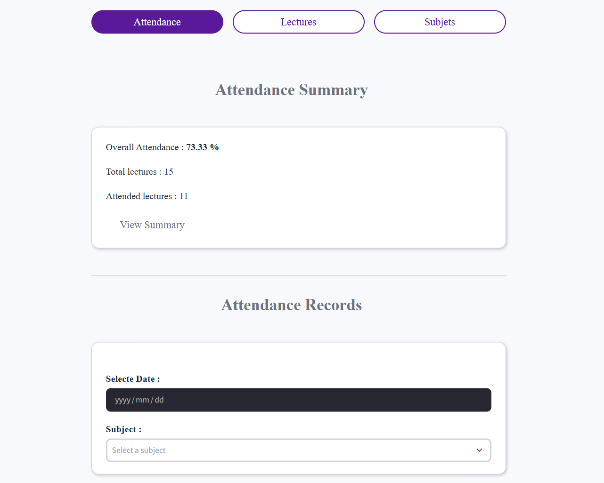
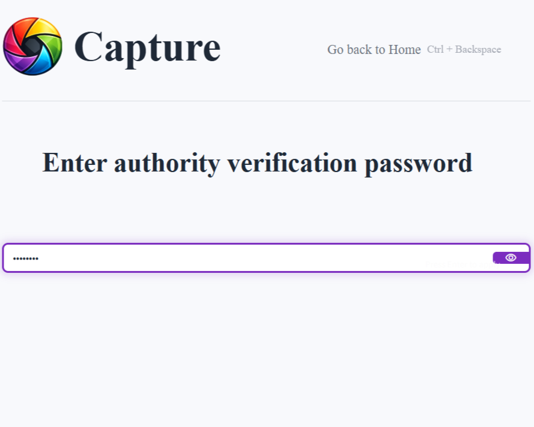
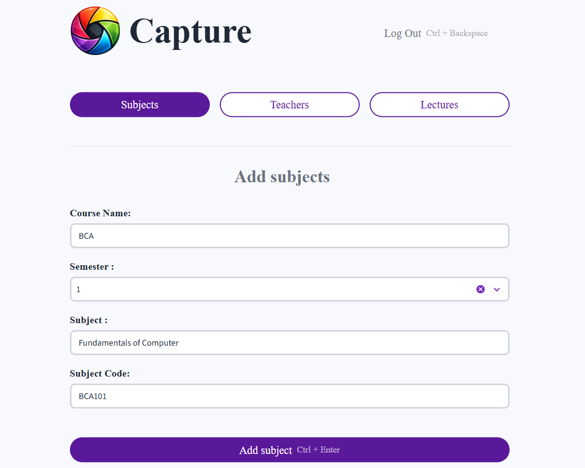
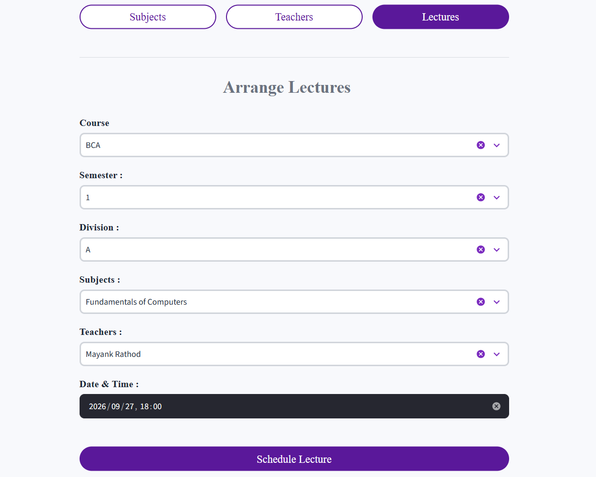
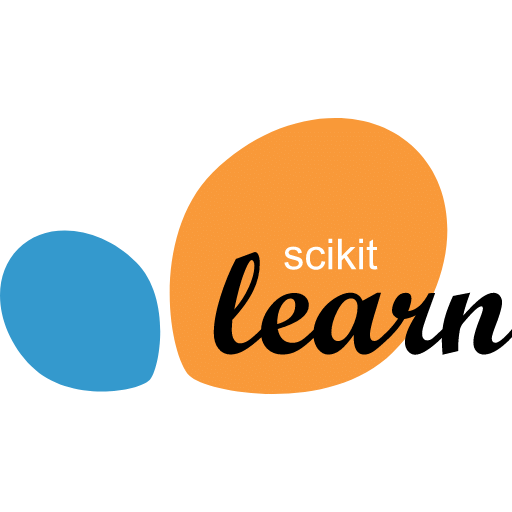

Welcome to the Capture an
AI powered attendance system
Simplify the way of taking attendance of all the students in just one click! Sounds interesting right. That's what Capture does. Try it out right now
Innovative Features
AI Face Analysis
Automatically recognize and mark students just by the facial data available in the picture using insightFace.
Encrypted Passwords
Use the Capture without any worries because your password is strongly encrypted using the bcrypt.
Individual Workflows
Suitable for any kind of user whether you are a student, professor or even an orgonization's authority.
Permanent Storage
All the essential data is stored permanently, so the data will be available whenever or wherever you need it at your fingertip.
Journey
Teacher's workflow
Section 01 - Login / Registration
- Registration
- Enter an unique username to register as a teacher. if the username is already taken the user won't be able to take that username.
- Then enter your full name and password. password is confirmed twice so the user do not enter the wrong password mistaknely.
- Once you are registered, just login using username and password then you are ready to go
- Login
- Login using the username and password that you used while registration. if not registered user then register first to continue.
Section 02 - Attendance
- You will get the attendance tab once you log in. Here you will get the option to select the lectures with pending attendance for today. You have 3 options to submit attendance:
- Upload Images : Upload the group image of students here and the system will automatically identify and mark the registered students. in case if any student is not marked you can mark it manually later.
- Use Camera : Instead of uploading images from your device you can directly use camera to get student's facial data and mark their attendance. this saves unnecessary storage in your device.
- Submit Manually : If there is any kind of fallback like the device's camera is not working or anything else you can always submit the attendaance manually.
Section 03 - Lectures & Subjects
- Every teacher have different subjects and lectures assigned to them. so just like an actual academic system the teacher will get it's own sujbects and lectures tab.
- Subjects : The teachers can check the subjects assigned to them by the authority for this semester in the Subjects tab. All the subjects will appear here with the respective subject codes.
- Lectures : Teachers can check the scheduled lectures here and also they can have a record of previous lectures and their attendance status.
Students's workflow
Section 01 - Login / Register
- Every student must have to register with a unique username and password and must have to upload their images. here's the process :
- Registration
- To register students have to enter a unique username and password. two students with same username can not exist.
- after that the students have to upload 4-5 clear images where their face is clearly visible. note that if the images with different faces is uploaded the system will not accept those images.
- Uploaded images will be used to recodnize the student from the images that the teacher uploads to take attendance
- Login
- Once the students have registered successfully. they can login in to the Capture using the unique username and password
- And also they can login using their facial id by simply just clicking photo of themself.

Section 02 - Attendance
- After successful login the students will be directed to the attendance tab here they will get these two sections :
- Attendance Summary : Here students will have information about their attendance. for example the percentage of attended lectures. The number of total lectures taken and the number of total lectures attended. They can preview a detailed summary too.
- Attendance Records : Students can also check the attendance records of a particular date or a particular subject.
Section 03 - Lectures & Subjects
- Students can also have the detail about scheduled lectures and the subjects of the semesters with the subject codes :
- Subjects : Here students can check all the subjects of the semester with subject name and subject code
- Lectures : In the lectures tab students can check the scheduled lectures with the lecture time, teacher of that lecture and the status of the lecture(attendance pending or conducted).
Authority's workflow
Section 01 - Security Verification
- In this workflow the majority of control is in the authority's hand. that's why the authority have to enter the password set by the system each time they want to access the authority section.

Section 02 - Create Subjects
- Authority have access to create new courses, semester and subjects in this workflow. here's the usecase of them :
- Course & Semesters : Whenever the authority wants to add a new subject in the workflow they have to decide the total semester in the course and course name. They can create a new course or add into existing course.
- Subject name & Subject code : After then the authority can create a new subject and give appropiate subject codes.

Section 03 - View teachers & Assign subjects
- In the teachers tab you can get record of all the registered teachers and assign subjects to those teachers. here the explanation :
- Detail of teachers : here you get all the registered teacher with their full name and username. also you can preview the subjects assigned to each teacher and assign a new subject to any teacher.
- Assign subject : The authority can view all the assigned subjects to the teacher and also it can assign a new subject just by clicking the "Add subject" button. and then selecting the required subject.
Section 04 - Schedule Lectures
- This is the last and most important step of this workflow. scheduling lectures. the lecture that are scheduled here will run the entire workflow of the Capture system. authority can schedule a lecture based on the sujbects assigned to the teachers.

Technologies

Sci-kit Learn
&
Insight Face
InsightFace is used to generate embeddings of the images and then Sci-kit Learn is used to comapre image embeddings for face recognition
Supabase
Supabase provides a larger scale to store the data and faster reqeuest responses in the Capture application

Streamlit
Deployed the entire project using streamlit making it extremely easy to deploy and responsive to any device.
Bcrypt
For the security of users, their passwords are hashed using bcrypt. so except the user no one can ever know their passwords.